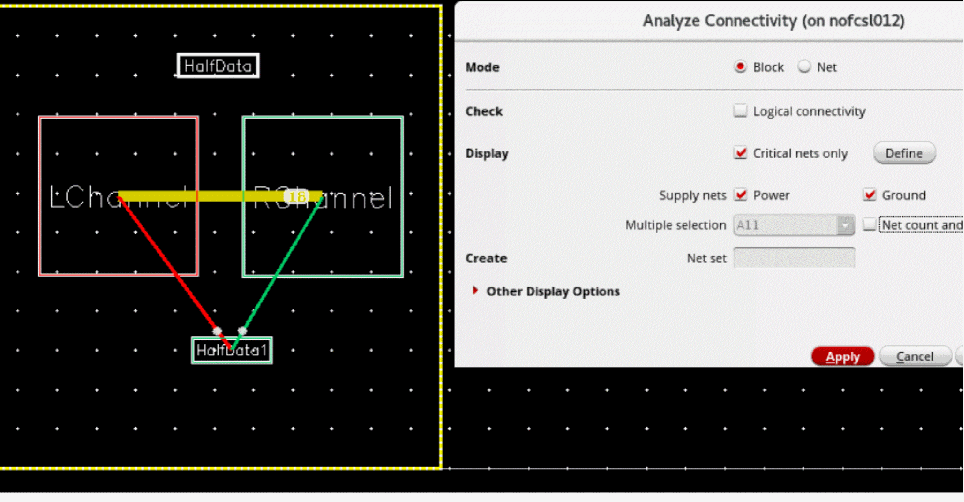
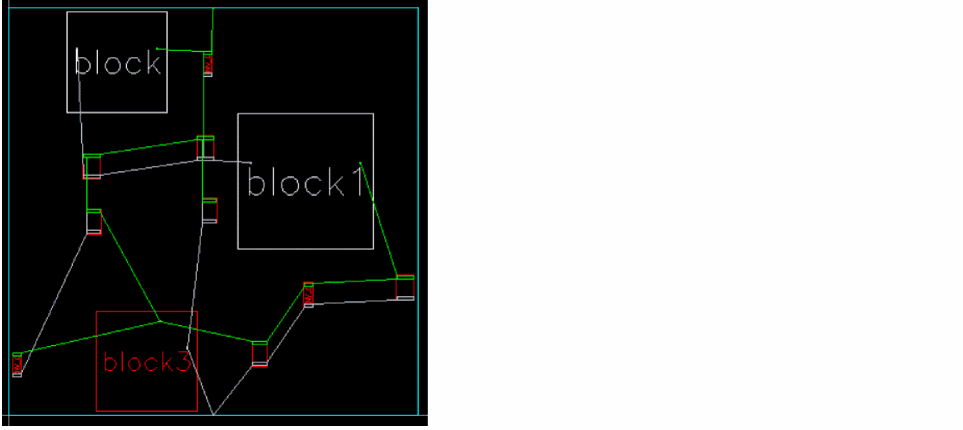
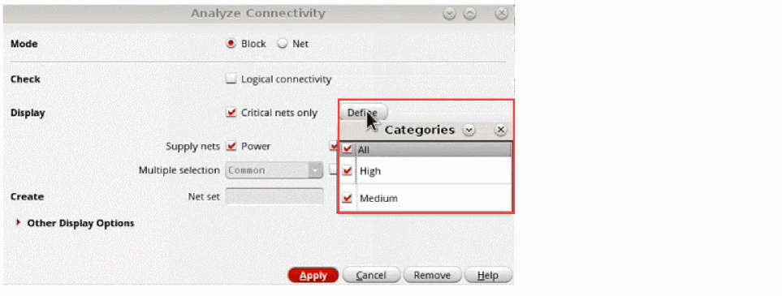
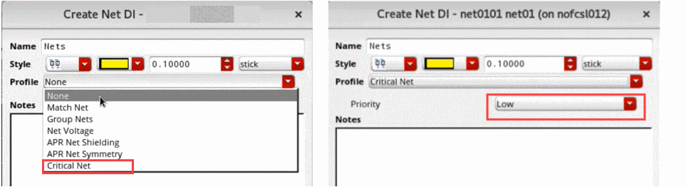
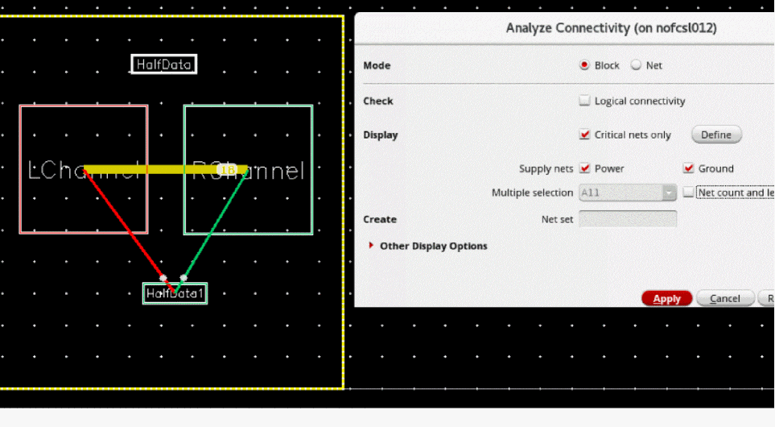
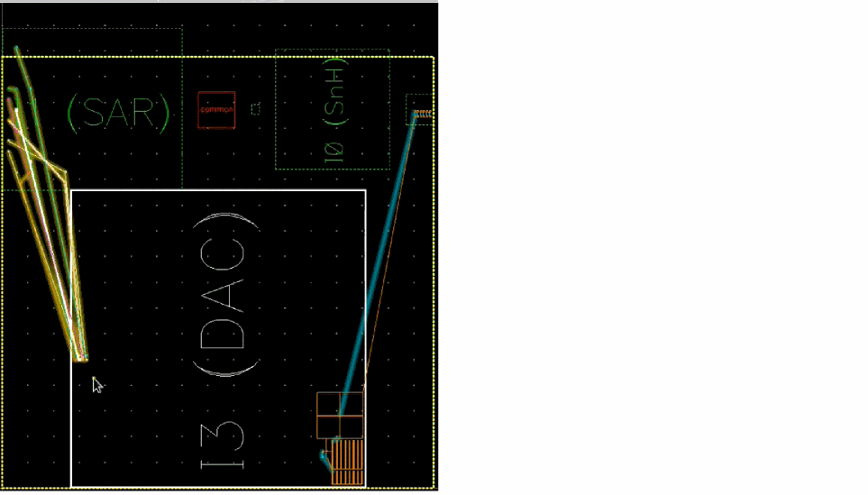
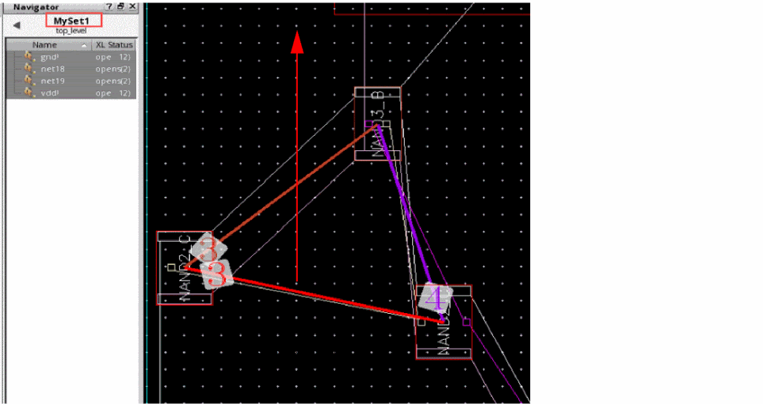

Analyzing Connectivity in a Floorplan
The Analyze Connectivity command is used to calculate the number of connections between each pair of selected instances, draw flight lines between each connected pair, and indicate the number of connections by displaying a numerical value on the flight lines.
For overlapping blocks and virtual hierarchies, the command draws the flight lines from the lower left of a block to the center of its connected block as shown in the following image.
For non-overlapping blocks, the flight lines are drawn center-to-center as shown in the following image.
To analyze connectivity between instances:
- Use one of the following methods to open the Analyze Connectivity form:
-
In the Mode section, select Block or Net mode to display connectivity information or net selection between the selected blocks or virtual hierarchies in the design canvas.
Consider a layout design where you select a block, choose Block mode, and run the Analyze Connectivity command. It displays the net connections from the selected block to other blocks in the layout. The yellow line highlights the nets that are connected between theROChannelandLChannelblocks, the green line highlights the nets between theROChannelandHalfData1blocks, and the red line highlights the nets between theLChannelandHalfData1blocks.
In the same layout design when you choose the Net mode and run the Analyze Connectivity command, it displays the point-to-point physical net connections from the selected block to other blocks.
 - In the Check section, select Logical connectivity to read connectivity information from the schematic view for the objects selected in the layout view.
- In the Display section, select Critical nets only to show connectivity information only for nets you consider to be critical in the design.
-
Click Define to open the Categories table, which filters the critical nets based on the available priorities. The available priorities of the selected net are Low, Medium, and High.
Consider a schematic design where you select a single net or multiple nets in the Navigator and choose Design Intent – Create Design Intent.
The Create Design Intent Form is displayed where you can set the Profile as Critical Net and Priority as Low.
In the Analyze Connectivity form, when you select Block mode, set Low priority in the Categories table, and click Apply, the nets that have low priority are highlighted in the layout design as shown in the image below.
In the same layout design, when you choose the Net mode and run the Analyze Connectivity command, it displays the pin-to-pin connections from theI3block to other blocks.
 - Select Supply nets to display the connections to the selected type of nets: Power, Ground, and Global.
-
Select Multiple Selection to enable cross-selection of multiple nets between the design canvas and the Navigator assistant.
- Select All (default) to highlight all nets that are connected to the selected objects and might be connected to other objects.
- Select Common to highlight the nets that are common to the selected objects and might be connected to other objects.
- Select Exclusive to highlight the nets that are common to only the selected objects and are not connected to any other objects.
- Select Net count and length to display the total number of nets and length of nets that are selected on the canvas. The All, Common, and Exclusive settings are applicable here too.
-
In the Create section, specify a name in the Net Set field for the set of nets that are selected on the design canvas.
The tool creates transient set of nets, which can be found using theopcFindSetAPI for read-only cellviews. For editable cellviews, the tool creates persistent set of nets which can be viewed in the Navigator assistant. - In the Other Display Options section, specify the Text Size of the flight lines. The available options are Auto and User Defined.
- Specify the color of the text that is displayed on the flight lines using Text Color. The available options are Black and White or Color.
- Adjust the transparency of the text on the screen. Drag the Transparency slider to specify a value.
- Specify the width of the flight lines by setting Line Width. The available options are User Defined or Proportionate.
- Set Display Connectivity On Selection Change to specify the mode in which connectivity information is to be displayed when a block is selected.
- Click Apply to make changes.
The information about connectivity is displayed within and between blocks. This information is useful when floor planning the design.
Related Topics
Return to top